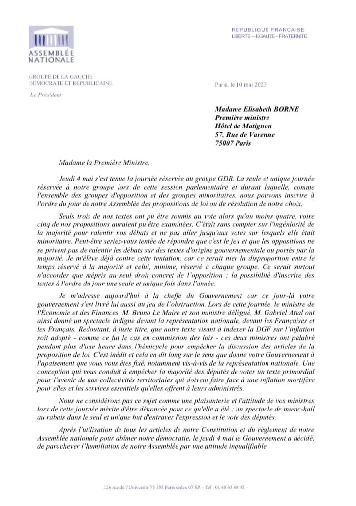
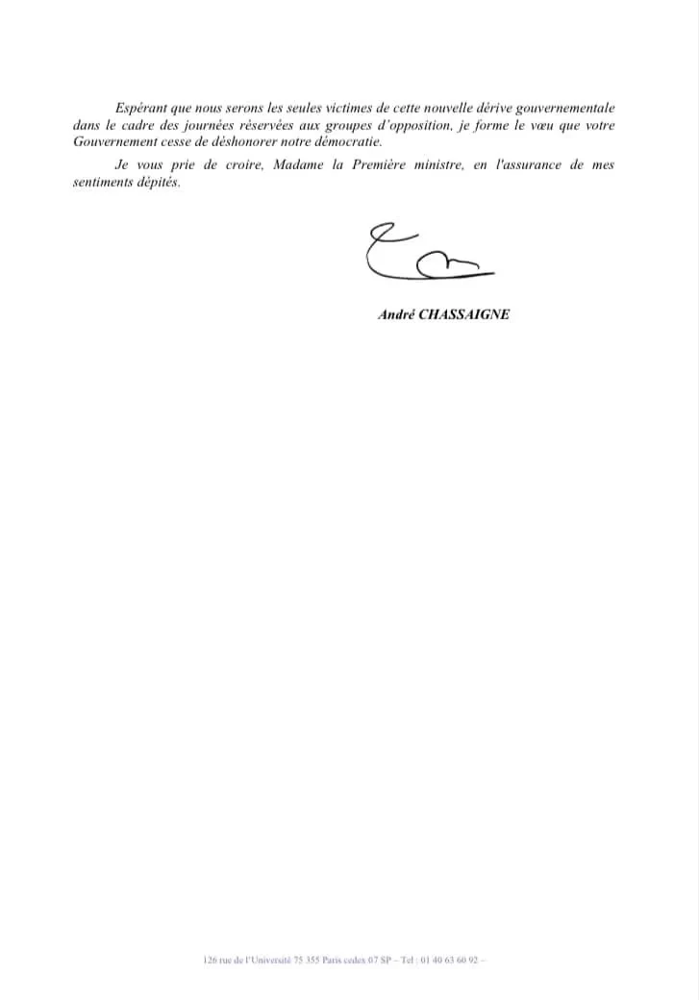

Publication relayée par le PCF 79
Après la niche du 4 mai, André Chassaigne écrit à Élisabeth Borne
Date de mise à jour indiquée par Facebook · 11 mai 2023
Texte de la publication · Les députés communistes
Colère d’André Chassaigne après le comportement indigne du gouvernement qui a tout fait pour ralentir les débats et empêcher les votes des textes présentés dans notre niche du 4 mai.
Son courrier à Elisabeth Borne


Sources
Les députés communistes · publication relayée par le PCF 79 · bibliothèque Facebook · AR-0002-FB-01654
À lire aussi · La journée d’initiative parlementaire du 4 mai annoncée en vidéo